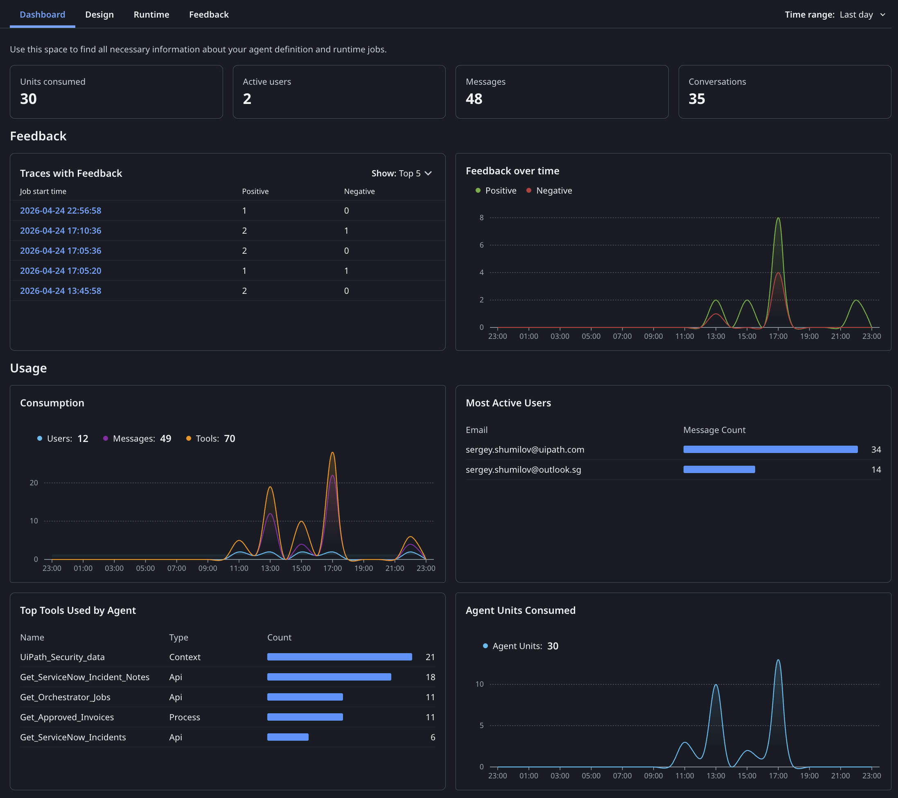

직접 사용해 보기¶
이번 레슨의 계획입니다:
- 디버그 모드에서 에이전트를 실행하고 여러 각도에서 테스트하기
- 각 응답 평가하기 — 에이전트가 올바른 도구를 사용했는지, 출처를 인용했는지, 쓰기 작업이 실제로 반영되었는지 확인하기
- 평가 옵션을 이해하고 에이전트를 실서비스로 게시하기
목표¶
이 레슨을 마치면 네 가지 유형의 대화 — 데이터 조회, 인시던트 조회, 코멘트 게시 작업, 컨텍스트 소스에 근거한 지식 질문 — 로 에이전트를 검증하게 됩니다. 디버그 인터페이스로 각 도구 호출을 실시간으로 지켜보고, 응답이 정확하고 신뢰할 만한지 직접 판단합니다.
대화로 테스트하기¶
자동화된 테스트는 회귀(regression)를 잡아냅니다. 수동 대화 테스트는 다른 것을 잡아냅니다. 에이전트가 실제로 말이 되는지, 원하는 것을 주는지 말입니다. 뭔가 잘못되었다면 — 돌아가서 프롬프트를 다시 검토하세요.
대화 테스트를 실행할 때는 네 가지를 살펴보세요.
- 도구 사용 - 에이전트가 올바른 도구를 호출했나요? 합리적인 인수를 전달했나요?
- 응답 품질 - 답변이 정확하고, 형식이 좋고, 적절한 수준으로 상세한가요?
- 쓰기 작업 - 에이전트가 데이터를 변경할 때, 그 변경이 실제로 반영되나요?
- 그라운딩 - 답변이 문서에서 나올 때, 출처가 제대로 인용되나요?
이 네 가지 범주에 걸쳐 잘 고른 몇 개의 대화만 있으면 에이전트 품질을 탄탄하게 가늠할 수 있습니다.
단계¶
1. 채팅 세션 시작하기¶
Debug(디버그)를 클릭해 디버그 구성 대화 상자를 엽니다. Context와 Processes 아래에 나열된 리소스를 검토하세요 — 세션 동안 에이전트가 접근할 수 있는 대상입니다.

테스트하려는 도구와 컨텍스트 소스가 모두 체크되어 있는지 확인한 다음 Save & Debug를 클릭합니다.
2. 채팅 인터페이스 확인하기¶
시작 프롬프트 칩이 준비된 채로 채팅 화면이 로드됩니다.
칩 중 하나를 클릭하거나 직접 메시지를 입력하세요. 에이전트는 항상 짧은 표시 텍스트가 아니라 전체 실제 프롬프트를 받습니다.

3. 데이터 조회 테스트: 인보이스 지출¶
How much did we spend last month?(지난달에 얼마나 썼나요?)를 클릭하세요. 에이전트에 전송되는 실제 프롬프트는 다음과 같습니다.
실행 트레이스를 지켜보세요. 에이전트가 in_DaysAgo: 30으로 Get Approved Invoices를 호출하고, 그 결과로 Data Fabric에서 전체 인보이스 목록을 받습니다.

이어서 에이전트가 데이터를 처리해 깔끔한 요약을 돌려줍니다.
숫자와 통화별 내역이, 시스템에 있다고 알고 있는 인보이스 규모에 비추어 그럴듯한지 확인하세요.

4. 인시던트 조회 테스트와 노트 작성¶
How many things break recently?(최근에 뭐가 얼마나 고장 났나요?)를 클릭하세요. 실제 프롬프트는 다음과 같습니다.
에이전트가 in_TicketAgeDays: 7로 Get ServiceNow Incidents를 호출해 최근 티켓 목록을 받고, 이를 분석해 상위 다섯 건으로 응답합니다.

첫 결과에 담당자 정보가 없을 때 에이전트가 데이터를 지어내지 않고 그 사실을 짚고 넘어간다는 점에 주목하세요. 좋은 신호입니다.
이제 조금 더 까다로운 것을 해 봅시다. 다음을 입력하세요.
Add an internal note to first ticket, say "This is critical to address it with highest priority! Fix it asap!". Validate that the note is added because it's important!
에이전트가 Post ServiceNow Incident Note를 호출한 뒤, 곧바로 Get ServiceNow Incident Notes를 실행해 변경 사항을 검증합니다.

에이전트는 쓰기 작업을 던져 놓고 잘 되었겠거니 하지 않습니다 — 직접 검증합니다. 바로 이런 동작을 눈여겨봐야 합니다.
확실히 하고 싶다면, 트레이너에게 ServiceNow에서 해당 인시던트를 직접 조회해 활동 타임라인을 확인해 달라고 요청해 보세요. 에이전트가 실제 운영 시스템에 진짜 변경을 만들었습니다 — 노트가 작성한 그대로 나타납니다.

5. 컨텍스트 그라운딩 테스트¶
마지막으로 Is UiPath platform Secure?(UiPath 플랫폼은 안전한가요?)를 클릭하세요. 실제 프롬프트는 AI 안전 기능에 대해 구체적으로 묻습니다.
에이전트가 UiPath Security data 컨텍스트 소스를 검색해 구조화된 답변을 돌려줍니다. 인용 마커(1)를 클릭해 출처를 확인하세요.

인용은 그라운딩된 지식 베이스의 정확한 페이지로 연결됩니다. 클릭할 때마다 원본 문서/파일로 이동합니다. 인용이 없는 답변 — 또는 엉뚱한 문서를 가리키는 인용 — 은 컨텍스트 소스를 다시 손봐야 한다는 신호입니다.
6. 에이전트 평가하기¶
에이전트를 프로덕션으로 보내기 전에 두 가지 방식으로 테스트할 수 있습니다.
Debug Chat
- Studio Web에서 실시간 실행 로그와 함께 진행하는 인터랙티브 테스트입니다.
- 좋아요/싫어요 피드백으로 결과를 평가 세트에 추가하고, 출처 추적을 위해 인용을 확인할 수 있습니다.
- 개발 중 빠른 반복에 좋습니다 — 변경 사항을 즉시 테스트하고 엣지 케이스를 발견하는 대로 담아 두세요.
Evaluation Sets
- 싱글턴 평가는 개별 프롬프트에 대한 도구 선택, 어조, 응답을 테스트합니다.
- 멀티턴 평가는 전체 대화 이력을 갖고 테스트하며 현실적인 사용자 여정을 시뮬레이션합니다.
- 두 유형 모두 궤적 기반(trajectory-based) 평가기와 기대 응답(expected-response) 평가기를 지원합니다. 여러 동급 모델 간 벤치마크도 가능합니다.
- Autopilot으로 자연어 설명만 가지고 평가 세트를 자동 생성할 수 있습니다.
7. 실서비스로 내보내기¶
다른 UiPath 솔루션과 마찬가지로 에이전트도 게시하고 폴더에 배포해야 합니다.
사본이 너무 많아지는 것을 피하려면, 모두를 위해 Conversational Agent 폴더에 게시해 둔 이 에이전트를 사용해도 됩니다: 직접 링크. 에이전트는 Deployed Agents 목록에 나타나며 통계와 사용 데이터를 모니터링할 수 있습니다. 사용자가 보낸 피드백도 여기에 쌓입니다.

옵저버빌리티 대시보드는 에이전트의 성능을 상세히 들여다볼 수 있게 해 줍니다. 예를 들면 다음과 같습니다.
- Business Intelligence(비즈니스 인텔리전스) — 소비 지표, 활성 사용자, 메시지, 대화, 피드백 추이를 시간에 따라 추적할 수 있습니다. 가장 많이 쓰인 도구와 가장 활발한 사용자를 확인해 도입 패턴과 최적화 기회를 찾아보세요.
- Compliance and Auditability(컴플라이언스와 감사 가능성): 전체 실행 트레이스로 에이전트 동작을 상세히 파악할 수 있습니다. AI Trust Layer Audit는 모든 LLM 호출을 모델 유형, 데이터 레지던시, PII 마스킹 상태와 함께 기록해 완전한 컴플라이언스 가시성을 제공합니다.
- Feedback(피드백): 사용자는 좋아요/싫어요로 응답을 평가할 수 있습니다. 관리자는 Instance Management에서 그 피드백을 검토하고, 얻은 인사이트를 평가 세트에 반영해 지속적으로 개선합니다.
그리고 마지막으로:
대화형 에이전트를 여러분의 애플리케이션에 임베드할 수도 있습니다!
UiPath 대화형 에이전트는 곧 음성과 IVR 기능, 클라이언트 사이드 도구 지원, WhatsApp 통합을 갖추게 됩니다. 하지만 이 실습은 여기서 완료입니다! 요약 페이지로 이동해 무엇을 만들었는지 확인해 보세요.